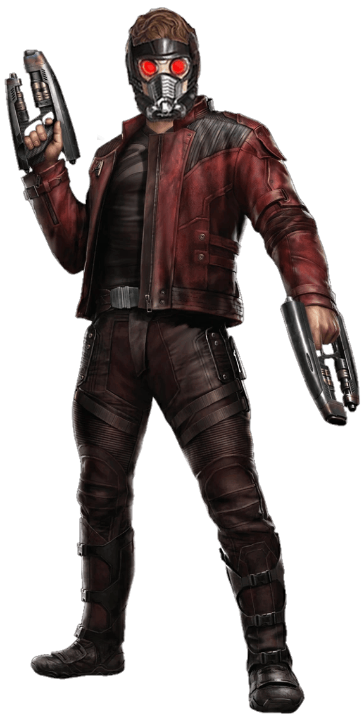

Peter Quill, também conhecido como Star-Lord, é o líder dos Guardiões da Galáxia. Conhecido por seu humor irreverente, amor pela música e habilidades em combate, ele se destaca como um dos heróis mais carismáticos do universo Marvel.
Equipado com tecnologia avançada e uma nave espacial icônica, ele enfrenta ameaças intergalácticas enquanto mantém seu estilo único e descontraído.